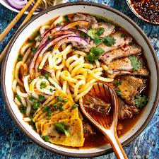

BUN BO HUE

Description
Ingredients
- Beef Shank or Oxtails.
- Pork Hocks. Or use pig trotters.
- Beef Brisket.
- Aromatics. Onion, garlic, lemongrass, ginger.
- Chili Flakes. Or you can use fresh chilies.
- Ground Annatto. Optional, for color.
- Shrimp Paste.
- Shallot.
- Garlic.
- Vegetable Oil.
- Salt and Sugar.
- Rice Noodles. Use thick rice vermicelli noodles (round, not flat noodles). Or use pho noodles.
- Fish sauce, Fresh herbs (cilantro, Thai basil, mint), Bean sprouts, Lime wedges, Sliced red onion, Sliced green onions, Sliced cabbage or bok choy.
- Vegetable Oil. Or other neutral oil.
- Hot Chili Peppers. Use hot ones to your own heat preference.
- Fresh Lemongrass.
- Garlic.
- Shallot.
- Gochugaru. Gochugaru is spicy Korean chili flakes, which you can find in Asian grocery stores or online. You can sub in other chili flakes.
Steps
Broth
- Clean the meat: Add all meat to a stock pot and enough water to submerge it, bring to a boil. Drain and rinse thoroughly under running water.
- Add the meat, broth, lemongrass and onions to the pot and fill with water almost to the brim. Bring to a boil then drop the heat to medium-high to maintain a low boil. Add the seasoning.
- Let it simmer and periodically check the meats for doneness and remove them as they finish cooking. The pork should be done after about an hour, the beef can vary between 2-3 hours.
- After all the meat has removed, let it cool, then slice it. Adjust seasoning and add water to the broth pot if necessary.
- Make the aromatics & coloring then add it to the pot.
- Boil noodles according to package instructions.
- Assemble your bowl, and serve with herbs and veg on a side platter.
Red Coloring & Aromatics
- Sauté seeds in oil on medium heat until the seeds give up the bright red color, then remove the seeds.
- Add shallots and garlic, sauté until brown.
- Add all of this to the pot of broth for color.
Pork Blood (Huyet / Tiet)
- The easiest thing to do is just buy it already cooked and boil just to heat it up. If you use the raw type like we did for this recipe, cut into 1″ cubes and boil for 30-45 minutes
Banana Flower
- Prepare a bowl of about 2 cups of water, mixed with the juice of 1 lemon.
- Thinly slice the banana flower and add to the water mixture to sit for about 30 minutes.
- Avoid adding little fronds (that look like mini bananas), removing them as you encounter them. They taste bitter!
Saté (spicy chile condiment)
- Weigh out the dried Thai chiles, then soak in just enough warm water to cover the chiles for 20 minutes. Drain the water.
- Add all sate ingredients to a pan on medium heat and stir continuously to brown, cook, and slightly reduce the chile paste, about 30-40 minutes. If at any point it becomes too dry, you can add more oil, up to 50% of the amount we started with. Taste and reseason with sugar or salt as desired. See photo for how the final product should look.
- et cool and transfer to a sealed jar stored in the fridge . You can add ~2 tbsp of the final product to the soup pot for a boost in flavor and color, or simply and let each person add to their bowl to make it as spicy as they'd like!
Back